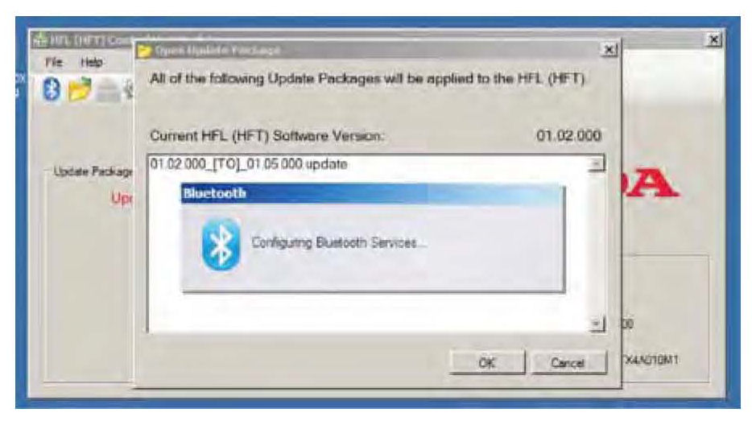
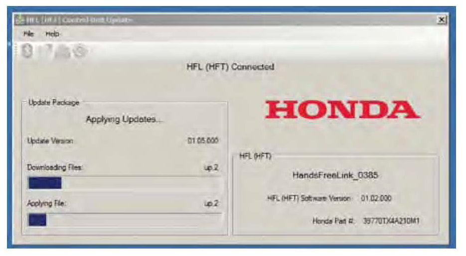
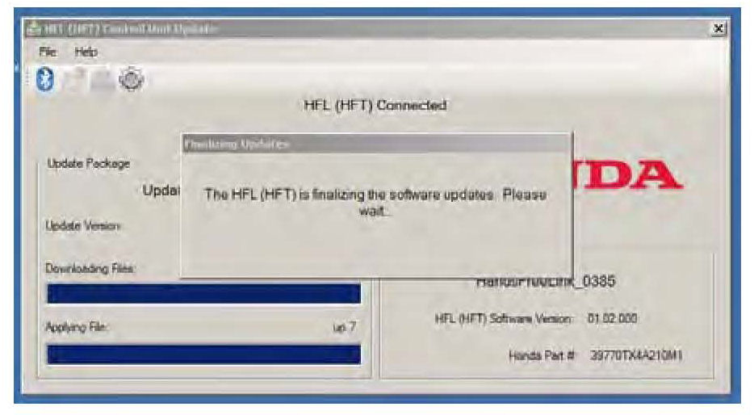

Vehicles With Navigation
Vehicles with NavigationNOTE:
Failure to follow the procedures and precautions in this bulletin may damage the HFL control unit.
1. Connect a jumper battery to the vehicle and leave it connected during this entire procedure to maintain a steady voltage.
2. Press the engine start/stop button to select the vehicle ON mode.
3. Wait for the navigation system to boot up. When the "OK" screen appears, press and hold the MAP/GUIDE, the DEST/ROUTE, and the CANCEL buttons for at least 3 seconds to access "Select Diagnosis Items."
4. Rotate the interface dial to select "Self Diagnosis Mode," then press ENTER on the interface dial.
5. The "System Link" screen appears and does an automatic diagnostic check. Wait a few moments while the process completes. Once completed, rotate the interface dial to select HFL and press ENTER using the interface dial.
6. In the HFL update tool, double-click the HFL Control Unit Update icon to launch the Honda HFL (HFT) Control Unit Update Tool (HFL update tool).
NOTE:
The HDS laptop must be connected to an AC outlet during the reflash process and must be within a distance of 21 feet to the vehicle. Do not allow the HDS laptop to go into sleep or hibernate mode during the reflash process. If this occurs, the Bluetooth connectivity between the HDS laptop and the vehicle's HFL system is dropped, and the reflash process is interrupted. It will then be necessary to restart the reflash procedure. See your laptop manufacturer's instructions or your system administrator for assistance to change these settings.
7. Rotate the interface dial to select "Software Update" in the HFL menu. Press ENTER on the interface dial to set the HFL system into reflash readiness mode.
NOTE:
If either GA-NET or DESIP is NG, the Software Update button will be grayed out, and you won't be able to proceed with this procedure. You must troubleshoot for and repair any NG conditions before continuing.
8. The HFL software update screen will display a 4-digit PIN code. Write it down on a piece of paper or on the RO and leave it in the vehicle.
NOTE:
This PIN is required to complete the HFL update and to re-establish communication if the update process is interrupted. If this PIN is lost, forgotten, or otherwise misplaced, the HFL control unit will be stuck in reflash mode, and you will be unable to complete the update. If this happens, you must replace the HFL control unit.
9. In the HFL update tool, click on the Bluetooth icon in the upper left corner of the "HFL Control Unit Update" screen in the HDS laptop to allow pairing with the vehicle's HFL.
*NOTE:
If an active Bluetooth adapter is not found on the HDS laptop, this error message will appear. Please review the REQUIRED TOOLS AND EQUIPMENT section of this publication for a recognized Bluetooth device. Contact your IT support for additional help.*
10. In the HDS laptop, the "Pair with HFL" window pops up. Wait a few seconds for the display to show "All Detected Bluetooth Devices." If no devices are found after about 30 seconds, click Refresh.
NOTE:
If the HFL control unit is unable to establish a Bluetooth connection with the HFL update tool after5 minutes, it times out. If this occurs, reboot the HDS laptop, press the engine start/stop button to select the OFF mode, and go to step 2.
11. In the HFL update tool, select the Bluetooth device from the list that matches the HandsFreeLink ID code shown in the navigation display.
NOTE:
There may be more than one Bluetooth device listed in the HFL update tool "Pair With HFL (HFT)" screen. Select the correct HFL ID from the list.
12. In the HFL update tool, once the Bluetooth device has been detected, enter the four-digit PIN from the vehicle's display screen into the lower left-hand corner of the pop-up window. Click Pair to begin the pairing process.
NOTE:
Leave the PIN you wrote down in step 8 with the vehicle. This PIN is required to complete the HFL update and to re-establish communication if the update process is interrupted. If this PIN is lost, forgotten, or otherwise misplaced, the HFL control unit will be stuck in reflash mode, and you will be unable to complete the update. If this happens, you must replace the HFL control unit.

13. Wait for the HFL update tool to complete the Bluetooth pairing process.
14. In the HFL update tool, the "Open Update Package" window pops up when the Bluetooth pairing process is complete. The HFL update tool automatically determines which version of the HFL software is present. The compatible updates will be displayed on the HFL update tool. Click OK to begin the HFL control unit reflash process.
NOTE:
If the HFL software is current and no update is required, you will see the following notification on the HFL update tool.

15. The HFL rehash process begins. Allow several minutes for the programming to complete. The blue bars indicate the programming status and progression.
NOTE:
Do not press the engine start/stop button to select the OFF mode while the HFL update tool is transferring files to the HFL control unit. Doing so may damage the HFL control unit. If the Bluetooth connectivity between the HDS laptop and the HFL control unit is lost, the ignition must remain ON, but the HDS laptop may be rebooted and the HFL update tool may be restarted, using the four-digit PIN you wrote down in step 8.

16. In the HFL update tool, a popup window alerts you when the reflash process is finalizing.
17. In the HFL update tool, a popup window informs you that the reflash process is complete. Click OK.
NOTE:
Failure to wait for the HFL update tool message "Updates Complete" to display prior to pressing the engine start/stop button to select the OFF mode will interrupt the HFL programming and will damage the HFL control unit.
18. The HFL update tool will indicate the update is complete, and automatically disconnects the Bluetooth connection from the vehicle's HFL control unit. Close the HFL update tool by clicking on the "X" in the upper right-hand corner.
19. Confirm that the software update was successful:
^ Press the engine start/stop button to select the OFF mode.
^ Wait at least 10 seconds.
^ Repeat steps 2 through 5.
^ If the software is updated to the current version, the reflash process is complete. Press the engine start/stop button to select the OFF mode.
^ If the software did not update to the current version, go to step 20.
20. Press the engine start/stop button to select the OFF mode.
21. Repeat steps 2 through 7, then go to step 22.
22. The HFL update screen will display a 4-digit PIN. Disregard this PIN; you'll use the original PIN acquired in step 8.
23. In the HFL update tool, click on the Bluetooth icon in the upper left corner of the screen to pair with the vehicle's HFL control unit.
*NOTE:
If an active Bluetooth adapter is not found on the HDS laptop, this error message will appear. Please review the REQUIRED TOOLS AND EQUIPMENT section of this publication for a recognized Bluetooth device. Contact your IT support for additional help.*
24. In the HFL update tool, the "Pair with HFL" window pops up. Wait a few seconds for the display to show All Detected Bluetooth Devices." If no devices are found after approximately 30 seconds, click Refresh.
NOTE:
If the HFL control unit is unable to establish a Bluetooth connection with the HFL update tool after 5 minutes, it times out. If this occurs, reboot the HDS laptop, press the engine start/stop button to select the OFF mode, and go back to step 20.
25. In the HFL update tool, select the correct Bluetooth device (if more than one appears) that matches the HandsFreeLink ID code shown in the vehicle's display screen.
NOTE:
There may be more than one Bluetooth device listed in the HFL update tool "Pair With HFL (HFT)" screen. Select the correct HFL ID from the list.
26. Once a device is detected, enter the previous 4-digit PIN from step 8 into the lower left-hand corner of the popup window in the HFL update tool, if it's not already displayed. Click Pair to begin the pairing process.
NOTE:
If the original PIN is lost, forgotten, or otherwise misplaced, the HFL control unit will be stuck in reflash mode and you will be unable to complete the update. If this happens, you must replace the HFL control unit.
27. Repeat steps 13 through 19.